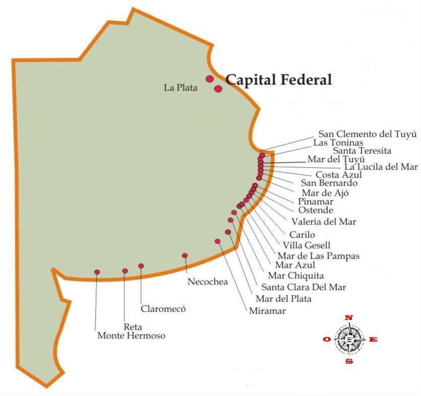
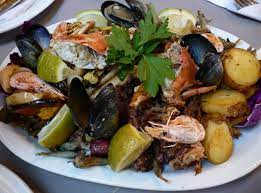
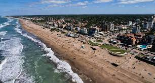

Información útil
Aquí encontrarás información útil para planear tu viaje a la costa atlántica:
-

Playas
La costa atlántica es famosa por sus hermosas playas. Asegúrate de visitar las más populares, como Santa Teresita y San Bernardo. Si estás buscando una experiencia más tranquila, puedes ir a playas menos conocidas como Aguas Verdes y Nueva Atlantis.
-

Gastronomía
La gastronomía de la costa atlántica es muy variada. Algunos de los platos típicos son el pescado a la parrilla, las empanadas de mariscos y el asado de tira. También puedes probar la pizza a la parrilla y las medialunas con dulce de leche, que son muy populares en la región.
-

Clima
El clima en la costa atlántica es cálido y húmedo durante todo el año. En verano, las temperaturas promedio son de 25°C, pero pueden superar los 30°C. En invierno, las temperaturas son más frescas y rondan los 15°C. Es recomendable llevar ropa ligera y cómoda en cualquier época del año.
Consejos de viaje
Aquí te dejamos algunos consejos para hacer de tu viaje a la costa atlántica una experiencia inolvidable:
- Si planeas visitar la costa atlántica durante la temporada alta (diciembre a marzo), es recomendable reservar tu alojamiento con anticipación para evitar problemas de última hora.
- Asegúrate de llevar suficiente agua y comida para el viaje.
- Si vas a la playa, no olvides llevar protector solar y sombrilla para protegerte del sol.
- Si quieres conocer lugares menos turísticos, te recomendamos visitar localidades como Pinamar y Villa Gesell, que ofrecen una experiencia más auténtica de la costa atlántica.
- No olvides probar los helados de la región. Hay muchas heladerías artesanales que ofrecen sabores únicos y deliciosos.